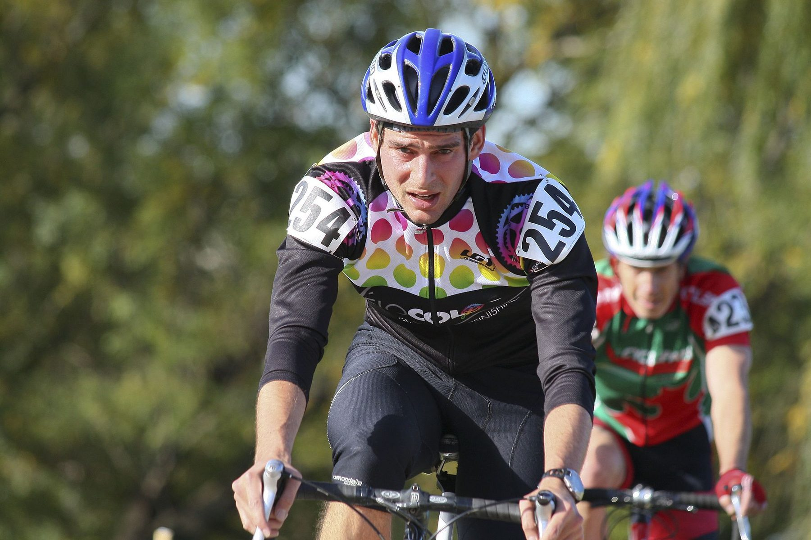

Циклокросс
Короткие круги, грязь и барьеры: взрывная выносливость и техника переноски байка поздней осенью и зимой.
Что это за дисциплина
Циклокросс — гонки по коротким кругам (2.5–3.5 км) с искусственными и естественными препятствиями: барьерами, песком, лестницами, где приходится спрыгивать и нести байк на плече. Сезон приходится на осень и зиму, трассы часто раскисшие от дождя.
Дисциплина требует не только выносливости, но и специфической техники: быстрого спешивания, переноски байка, работы в грязи и на скользких поворотах.
С чего начать
- Начните с базового шоссейного или гравел-байка с покрышками пошире, прежде чем брать выделенный циклокроссовый
- Отрабатывайте технику спешивания и посадки на скорости на пустой площадке
- Тренируйте перенос байка через плечо — это экономит секунды на барьерах
- Готовьтесь к работе в грязи: низкое давление в шинах и уверенное торможение
Тренировочный подход
Гонки короткие и интенсивные, поэтому тренировки строятся вокруг высокоинтенсивных интервалов и силовой выносливости, плюс отдельные сессии по технике барьеров и спешивания.
Другие дисциплины
Попробуйте себя в другом формате.
Готовы выйти на старт?
Оставьте почту — пришлём вводный план по циклокроссу и календарь ближайших стартов.